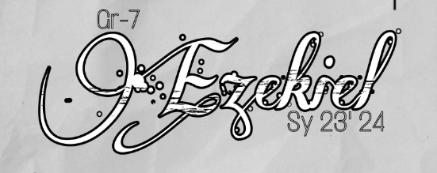

Introduction

Grade 7 Ezekiel represents a diverse and energetic community of learners. In our section, we value creativity, teamwork, and the pursuit of knowledge. With our dedicated teachers and motivated students, we're all set to make this school year a remarkable one, filled with growth and achievement!
Vision
Our vision is to adopt and implement a holistic approach to excellence, striving to be the best section by nurturing not only academic achievements but also personal growth, leadership, and community engagement. Our dedication to continuous improvement and collective ambition propel us to unparalleled heights, making us a source of inspiration for others.

Mission
To foster a thriving academic community within our student section, we are committed to achieving academic excellence, personal growth, and social engagement. We aim to support each other's educational journeys, share knowledge, and create a positive and inclusive environment where all members can thrive academically and personally.
I will give you a new heart and put a new spirit in you; I will remove from you your heart of stone and give you a heart of flesh.
- Ezekiel 36:26